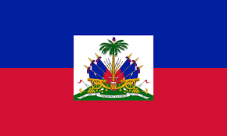

Historia
La selección más laureada del planeta
Brasil es, sin discusión, la selección más exitosa en la historia de los Mundiales. Con cinco títulos — 1958, 1962, 1970, 1994 y 2002 — la Canarinha llega a cada torneo como una de las favoritas absolutas. Su estilo de juego, marcado por la técnica, la creatividad y el desborde, ha definido generaciones enteras de aficionados al fútbol en todo el mundo.
En Qatar 2022, Brasil llegó como uno de los grandes favoritos pero cayó en cuartos de final ante Croacia en penales, una derrota que aún duele. El Mundial 2026 se presenta como una oportunidad de redención en suelo americano, ante una afición que los conoce y los respeta.
Estadísticas mundialistas
5
Títulos
23
Participaciones
76
Victorias
100%
Ediciones jugadas
Partidos en Grupo C
13 jun
 Brasil vs Marruecos
Brasil vs Marruecos 
MetLife Stadium
East Rutherford
East Rutherford
19 jun
Brasil vs Haití 
BC Place
Vancouver
Vancouver
24 jun
Brasil vs Escocia 
Hard Rock Stadium
Miami
Miami
Curiosidad
Únicos en la historia: Brasil es la única selección que ha participado en todas las ediciones de la Copa Mundial de la FIFA desde su primera edición en 1930. Ninguna otra nación puede presumir de semejante continuidad en el torneo más importante del fútbol mundial.